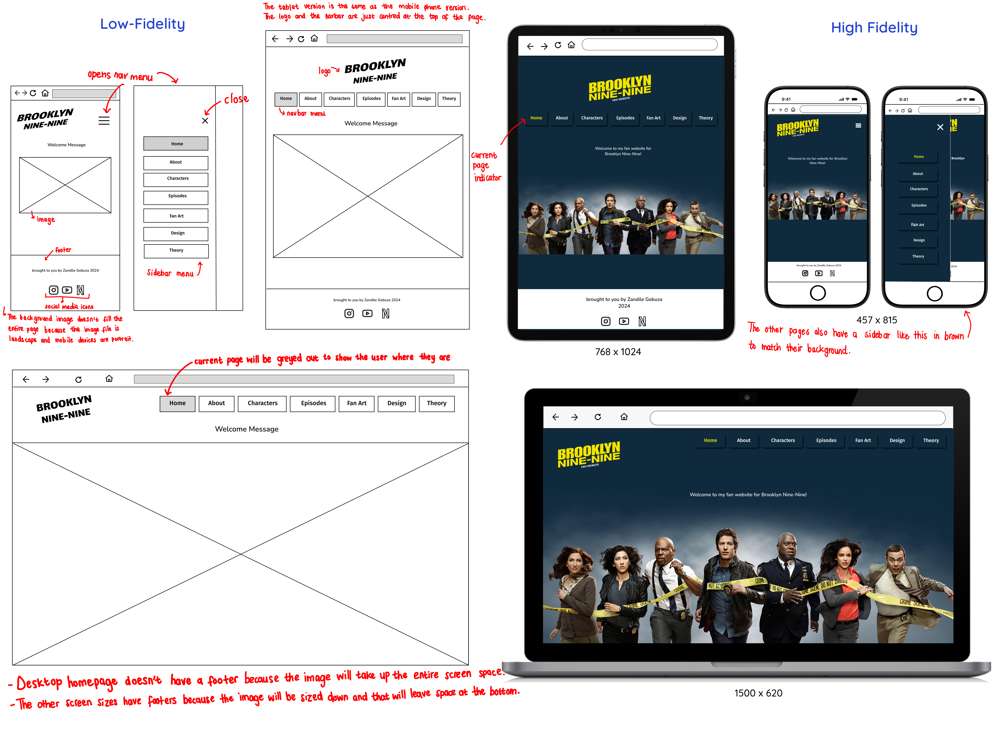

Iteraction Design
User Alignment
My goal is to make a fully functional website that is also aesthetically pleasing. I want users to find my website different from other websites they have used and to also find each point of interaction intuitive. In general, I hope the users have a good experience when using the website and I hope they get inspired/convinced to give Brooklyn Nine-Nine a watch. My target audience is teens and young adults. The website can still be enjoyed by people who are not part of this target audience but I specifically chose these groups of people because they are the general demographic that is interested in tv shows and fandoms. They participate in forums, conventions and on social media platforms for their different fandoms therefore, this website will be right up their alley.
Information Structure

User Flow
There are multiple flows but these are just a few to illustrate the order in which the user can go through the website.

Interface Elements
- Navigational Components: I want to add "next" and "previous" buttons at the bottom of each page. These will help the user navigate the website without needing to use the nav menu at the top of the page.
- Informational Components: On the Fan Art page I want to add tooltips that show the artists' names when the user overs over each image. I will also use tooltips for the data visualisations. When the user hovers over a section/point on the visualisation, a description for that item will appear. I also want to add a reading progress bar for pages that have a lot of information such as the Design and Theory pages. When the user scrolls up, the progress bar will increase, and when they scroll down, the bar will decrease. This will indicate to the user how far they are in reading/exploring those pages.
- Input controls: I want to add a return to top button. This allows the user to go back to the top of the page without having to scroll.
Style Guide

Critically engage with your choices a little more and explain why you’re doing what you’re doing.
Wireframes
Home
About

Characters

Episodes

Fan Art

Design

Theory